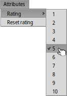

| Index |
| File Edit Browse Image View Attributes Keyboard shortcuts |
 图片查看器
图片查看器
| 桌面栏: | 没有程序入口，通常通过双击所支持的文件进行启动。 | |
| 位置: | /boot/system/apps/ShowImage | |
| 设置: | ~/config/settings/ShowImage_settings |
ShowImage allows you to view images in all formats that are supported through DataTranslators. New formats are automatically recognized when their translator is added to the system. This has been done for Haiku's vector icon files, WonderBrush images or when WebP images became available, for example.
ShowImage doesn't provide editing features, but it does allow you to select a rectangular area and save it in any format. You can also rotate and flip images, but these operations don't physically change images. They only add an attribute that indicate to rotate or flip the image automatically when it's opened the next time.
Let's go through the menus in order, leaving out the obvious items.
 File
File

The sub-menu lists the most recently viewed images.
The lets you open the current image in any application supporting its filetype.
The sub-menu lets you choose a format to save the current image.
opens the Backgrounds preferences to quickly set the current image as backdrop of your workspace(s).
Edit

When is activated ̵ also available with the dashed rectangle icon of the tool bar ̵ you can select a rectangular area of the image that you can then drag&drop to the Desktop or any folder to save it. Dragging with the right mouse button will show a menu when dropping the snippet that lets you choose another image format.
If you don't want to change modes first, you can create this selection frame in "normal mode" by simply holding CTRL while left-click-dragging.
or ESC will remove the selection frame.
Browse

打开图像之后，您可以通过 ↑/↓ 或 ←/→ 按键快速的浏览该文件夹中的所有其他图像。您可以在文件浏览器窗口中看到相应选择项的变动。
There is a quick way to open the folder of the current image and even navigate to its parent and subfolders. It works just like with drill-down navigating in Tracker by clicking in the info area in the status bar that shows size, zoom level and format of the current image.
查看 菜单，其中显示了其他的浏览方式：一些图像格式，如 TIFF，可以在一个文件中包含多个页面。 和 等命令可以让您浏览这些页面。
Image

The menu offers the few image manipulations necessary for an image viewer: rotating and flipping the image.
Note however, that the actual image data won't be changed. Only an attribute is added to the file so it'll be shown rotated or flipped the next time you open it.
View

菜单能够以 得形式查看文件夹（或查询结果窗口）中的所有图像并且可以设置 为 2~12 秒。
其他可用于当前显示图像的命令（无需修改窗口大小）：
以 100% 的比例显示图像。
缩放图像以适应窗口边框，如放大之后，或调整窗口之后。
和 以 10% 的幅度缩放图像。缩放也可以通过鼠标进行；为了查看一个尺寸大于窗口的图像内容，只需左键点击图像，然后拖动鼠标即可。
Two settings don't just apply to the currently displayed image and are remembered when browsing from one image to the next:
applies a very fast filter when zooming to reduce jagged lines and produce a smoother result.
will stretch smaller images to fill the current window frame.
还有一个 选项的 模式，它可以在图像的底部显示文件名称。
最后， 将会显示/隐藏图形空间：

From left to right: Previous image, next image, start slide show (in full screen mode), selection mode, original size, fit to window, zoom in, zoom out, previous and next page (when an image format like TIFF allows multiple pages in one file).
多数常用的命令可以通过右键点击图像的菜单来获得。全屏模式时非常方便。
Attributes

Here you can set a of the current image between 1 and 10, or choose to set it back to "unrated" (= "0").
In Tracker, ratings are displayed in a "Rating" attribute column as a number of stars. Five stars represent the 10 possible values, resulting in half-star steps. For example, a rating of 7 is shown as 7 / 2 = 3.5 stars: ★★★⯪☆.
You can edit the rating directly in Tracker as well: Select the file, choose from the menu and press TAB to get into the "Rating" column. Now you can enter the new numerical value which will turn into a star rating after hitting ENTER.
Keyboard shortcuts
下面是最常使用的快捷键列表：
| ← / ↑ | 上一个图像 | |
| → / ↓ | 下一个图像 | |
| DEL | 移动到垃圾箱 | |
| + | 放大 | |
| - | 缩小 | |
| 0 | 原始大小 | |
| 1 | 适合窗口 | |
| ALT ENTER | 切换全屏模式（也可以双击） | |
| CTRL | 按下 CTRL 键，您可以创建选择框而无须显式的切换到选择模式。 |